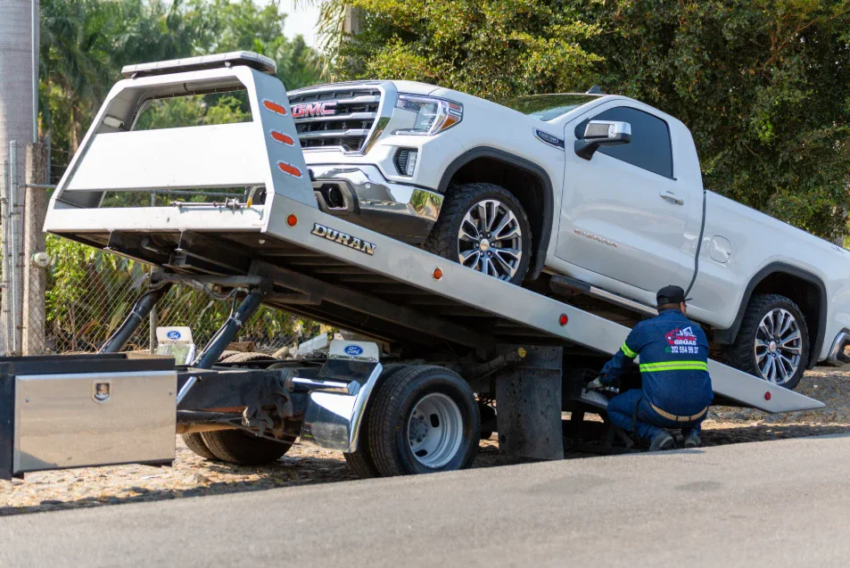

AI vs Traditional Towing Dispatch: An Honest Comparison from Inside the Industry
There's a lot of noise right now about AI dispatch. Everyone's got an opinion — mostly people who've never actually run a tow company. Here's the view from someone who has.

Towmatic was built by two tow companies with over 90 years of combined experience. We've dispatched thousands of jobs using AI. We've also dispatched tens of thousands using traditional methods. Here's an honest comparison of what each approach does well, where each falls short, and when it makes sense to switch.
The Case for Traditional Dispatching
Let's start with what works. A good human dispatcher is invaluable. They know your regulars by name. They can hear the stress in a caller's voice and adjust. They build relationships with motor club reps and police departments that translate into consistent call volume.
Traditional dispatch has been the backbone of tow operations for decades. The dispatcher takes a call, figures out what the customer needs, calls the driver, and manages the job through completion. It's simple, direct, and for a long time, there wasn't a better option.
A skilled dispatcher understands nuance. They know that "my car won't start" might mean dead battery, might mean alternator, might mean transmission failure — and they ask the right follow-up questions. They can handle the irate customer who's been waiting for AAA for two hours. They can coordinate complex recoveries that require multiple trucks and equipment.
The Problems That Don't Go Away
The 3 AM Problem
Nobody wants to answer the phone at 3 AM. Your dispatcher doesn't. You don't. Hiring someone specifically for overnight shifts is expensive ($40-60k salary) and hard to staff reliably. So the phone goes to voicemail — and voicemail in towing means lost jobs.
The Overhead Problem
A full-time dispatcher is a fixed cost. Whether you run 5 jobs or 50, the salary is the same. In slow months, that overhead can crush your margins. In busy months, one dispatcher can't handle the volume.
The Single Point of Failure
Your dispatcher calls in sick. Or quits. Or takes vacation. Suddenly you're the dispatcher — on top of running the business, managing drivers, and everything else. There's no backup that doesn't involve you personally.
The Scaling Problem
A storm hits. A multi-car pileup happens. Suddenly you're getting 10 calls in 30 minutes. One dispatcher can't handle that. Calls get missed, customers get frustrated, and jobs go to competitors.
What AI Brings to Towing Dispatch
AI dispatch isn't magic, and it's not trying to replace everything a human dispatcher does. It's solving specific problems where traditional dispatch breaks down:
- Instant, simultaneous callsNo hold, no voicemail. AI can handle multiple calls at once during peak times.
- 24/7 at fixed costNo overtime, no shift differentials, no sick days. The monthly cost is the monthly cost.
- Automatic driver notificationsA push notification goes straight to the next driver on call, and they confirm in the Towmatic app with one tap. Drivers who aren’t signed in get a text or phone call instead.
- Escalation without hesitationIf a driver doesn't respond, AI moves to the next driver immediately. No social friction, no waiting.
- Log everythingEvery call, every dispatch, every driver response. Complete audit trail.
Being Honest About the Limits
AI dispatch isn't magic. There are things it doesn't do well — yet — and being honest about that is important.
Complex recovery scenarios — a rolled semi, a submerged vehicle, a multi-agency accident scene — still benefit from experienced human judgment. AI can handle intake, but the coordination and decision-making for heavy jobs requires human expertise.
Relationship building is also a human strength. The motor club rep who sends you extra calls because they like working with you, the police sergeant who calls your dispatcher directly — those relationships matter, and they're built by people.
The Part Nobody Demos — And It's the Part That Matters Most
Building a voice agent is easy. You can spin one up in a weekend. What's hard is the backend: driver rotation logic, handling vague locations ("I'm near that gas station off the highway"), differentiating between a lockout and a winch-out and a police impound call, escalation protocols that work at 2 AM, and the hundred edge cases that only show up after you've dispatched a few hundred real jobs.
Towmatic built the backend first — because we needed it for our own tow operations. The voice agent is the front door, but what happens after the call ends is what makes the difference.
Is AI Dispatch Right for Your Tow Company?
AI dispatch makes sense if:
- You're losing after-hours calls to voicemail
- Dispatcher overhead is straining your margins
- You want to grow without adding headcount
- You're tired of being the backup dispatcher at 3 AM
AI dispatch might NOT be right if:
- You're entirely heavy-duty recovery (complex coordination)
- Your value proposition is purely personal, relationship-based service
Even then, AI can still handle routine calls and after-hours while you focus on specialized work.
We Built Both — Here's What We Recommend
We've run tow companies with traditional dispatch. We've built and use AI dispatch. Here's what we've learned:
The best setup isn't AI OR traditional — it's AI handling the volume, the routine, and the overnight, while your team handles the complex jobs, the relationships, and the decisions that require human judgment.
That's not a compromise. That's the best of both worlds: the cost efficiency and coverage of AI, plus the expertise and relationships that only people can provide.